Chapter 1 · Foundations
Scale from Zero to Millions of Users
Grow a one-server web app into a multi-data-center system one bottleneck at a time. You'll see what load balancers, replication, caches, CDNs, stateless servers, message queues and sharding each fix, and what new problem each one brings.
TL;DR
- Scaling is iterative: each stage fixes today's bottleneck and exposes the next one.
- Split tiers, then scale out: separate the web and data tiers, then add web servers behind a load balancer (public IP outside, private IPs inside).
- Stateless web tier: keep session data in a shared store (NoSQL), so any server can serve any request and the tier can autoscale.
- Replicate the database: writes go to the master, reads to the slaves. If the master dies, promote a slave.
- Cache + CDN: keep hot, rarely-changing data in memory (set expiry, plan for consistency, avoid a single point of failure, evict LRU). Serve static files from a CDN with TTLs.
- Multiple data centers: geoDNS sends users to the nearest one. You must solve traffic redirection, data sync and deployment.
- Message queues decouple slow work so producers and consumers scale independently. Add logging, metrics and automation.
- Shard the data tier by a key that spreads data evenly (e.g.
user_id % 4). Expect resharding, celebrity hotspots and cross-shard joins (fix: denormalize).

How to use this in an interview
Most design questions reuse this toolbox. Grow your design in this order, and for each move say what it fixes and what it costs.
- Start simple, split the tiers One server, then separate web and data tiers. Default to SQL; justify NoSQL with a concrete reason.
- Scale the web tier out Load balancer in front, and keep the web tier stateless (sessions in a shared store) so it can autoscale.
- Build redundancy at every tier Two or more web servers, master–slave replication, several cache servers, and support multiple data centers with geoDNS.
- Cut latency and load Cache data as much as you can (expiry, consistency, eviction) and host static assets in a CDN.
- Scale the data, decouple, operate Shard the data tier (name the key; mention resharding, hotspots, joins), split tiers into individual services with message queues, and monitor and automate.
The scaling journey at a glance
Each addition fixes one problem and exposes the next. Learn the chain, not just the parts.
| # | Stage | Solves | Exposes next |
|---|---|---|---|
| 1 | Single server | Get running on one box | One server isn't enough as users grow |
| 2 | Separate database | Tiers scale independently | Users hit one web server directly: down = unreachable, overloaded = slow |
| 3 | Load balancer | Web-tier failover and capacity | One database: no failover |
| 4 | DB replication | DB failover; parallel reads | Every page load hits the DB; slow static files |
| 5 | Cache + CDN | Fewer DB calls; assets near users | Session state pins users to servers |
| 6 | Stateless web tier | Any server serves any request; autoscaling | Users are now worldwide |
| 7 | Multiple data centers | Availability and latency across regions | Coupled components can't scale independently |
| 8 | Message queue | Decoupled, async work | A large business needs visibility and automation |
| 9 | Logging, metrics, automation | Find errors, see health, ship safely | Growing data overloads the DB |
| 10 | Sharding | Data tier scales out | Resharding, hotspots, cross-shard joins |
Single server setup
Start with everything on one server (web app, database, cache, etc.) and learn the request flow every later design reuses.
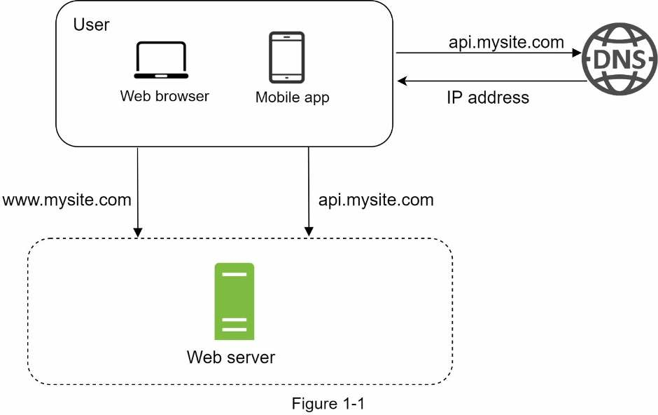
www.mysite.com, app → api.mysite.com, one server.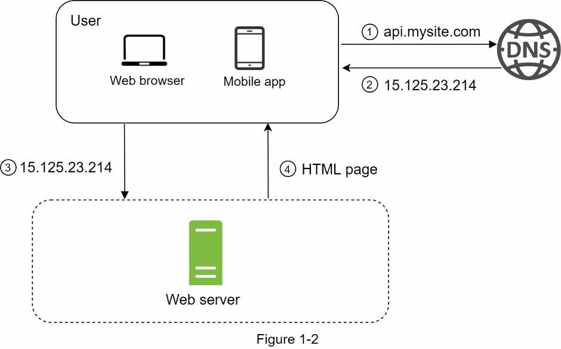
Request flow
- Users reach the site by domain name, e.g.
api.mysite.com. DNS (Domain Name System) is usually a paid third-party service, not hosted on your servers. - DNS returns an IP address to the browser or app (here
15.125.23.214). - The client sends HTTP (Hypertext Transfer Protocol) requests directly to your web server.
- The web server returns HTML pages or a JSON response for rendering.
Traffic sources
- Web app: server-side languages (Java, Python, etc.) for business logic and storage; client-side (HTML, JavaScript) for presentation.
- Mobile app: HTTP to the web server, usually with JSON (JavaScript Object Notation) responses for simplicity.
Example: GET /users/12 retrieves the user object for id = 12:
{
"id": 12,
"firstName": "John",
"lastName": "Smith",
"address": {
"streetAddress": "21 2nd Street",
"city": "New York",
"state": "NY",
"postalCode": 10021
},
"phoneNumbers": [
"212 555-1234",
"646 555-4567"
]
}Next bottleneck → one server isn't enough as users grow.
Separate the database (SQL vs NoSQL)
Put the web tier (web/mobile traffic) and the data tier (database) on separate servers so each can scale independently.
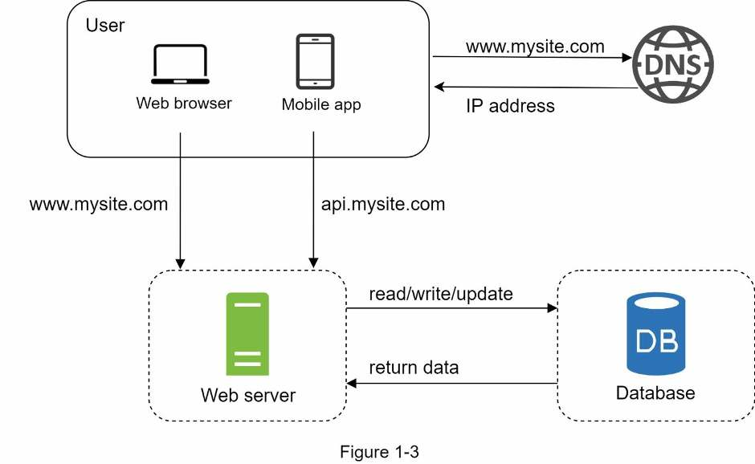
Which database to use?
| Relational (SQL) | Non-relational (NoSQL) | |
|---|---|---|
| Also called | RDBMS (relational database management system), SQL database | NoSQL database |
| Popular examples | MySQL, Oracle Database, PostgreSQL | CouchDB, Neo4j, Cassandra, HBase, Amazon DynamoDB |
| Data model | Tables and rows | Four categories: key-value, graph, column and document stores |
| Joins across tables | ✓ via SQL | ✗ generally not supported |
| When | Default for most developers: around for 40+ years and historically worked well | When relational doesn't suit your use case |
NoSQL might be the right choice if
- Your application needs super-low latency.
- Your data is unstructured, or you have no relational data.
- You only need to serialize and deserialize data (JSON, XML, YAML, etc.).
- You need to store a massive amount of data.
Vertical vs horizontal scaling
Scale up (a bigger machine) is simple but capped. Scale out (more machines) is how large systems grow.
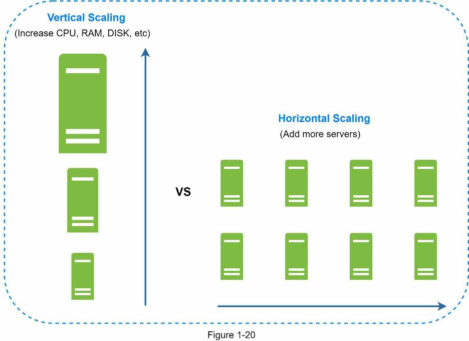
| Vertical ("scale up") | Horizontal ("scale out") | |
|---|---|---|
| How | Add power (CPU, RAM, etc.) to your servers | Add servers to your pool of resources |
| Best when | Traffic is low; main advantage is simplicity | Large-scale applications |
| Room to grow | ✗ Hard limit: you can't add unlimited CPU and memory to one server | ✓ Keep adding servers |
| Failover and redundancy | ✗ If the server goes down, the site goes down completely | ✓ Other servers keep serving |
Next bottleneck → users still connect to the web server directly. If it's offline, they can't reach the site. If it hits its load limit, they get slow responses or can't connect. A load balancer fixes both.
Load balancer
A load balancer evenly distributes incoming traffic among the web servers in a load-balanced set, so one server failing or filling up no longer takes the site down.
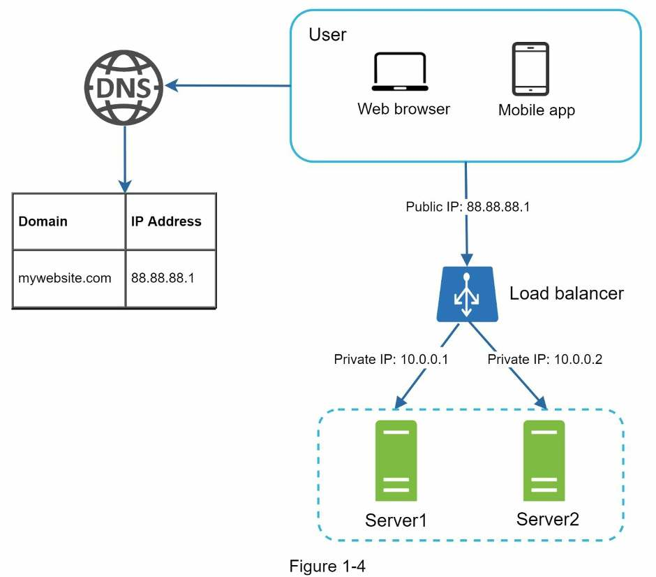
- Users connect to the load balancer's public IP; clients can no longer reach the web servers directly.
- For security, the load balancer reaches the servers over private IPs: addresses reachable only between servers in the same network, not over the internet.
- Failover: if server 1 goes offline, all traffic goes to server 2 and the site stays up. Add a new healthy server to rebalance the load.
- Growth: if two servers aren't enough, add more to the pool; the load balancer automatically starts sending them requests.
Next bottleneck → one database: no failover or redundancy.
Database replication
Copy the database: a master takes all writes, several slaves serve reads, and a copy takes over when one fails.
- The master generally supports only writes: every data-modifying command (insert, delete, update) goes to it.
- Slaves get copies of the data from the master and support only reads.
- Most apps read far more than they write, so there are usually more slaves than masters.
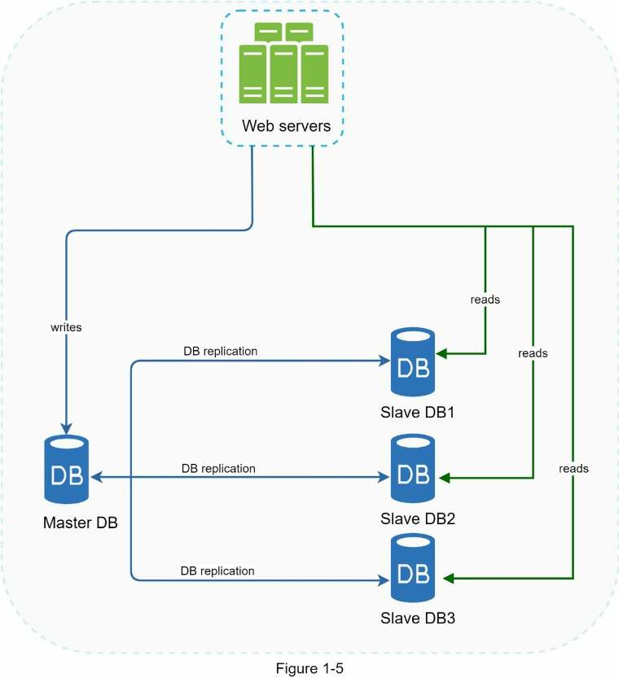
Advantages
- Better performance: writes happen on the master and reads spread across slaves, so more queries run in parallel.
- Reliability: if a server is destroyed by a natural disaster (typhoon, earthquake), the data survives because it's replicated across locations.
- High availability: the site keeps working when one database is offline, using data on another server.
What if a database goes offline?
| Failure | What happens |
|---|---|
| The only slave | Reads go to the master temporarily. As soon as the issue is found, a new slave replaces the old one. |
| One of several slaves | Reads go to the other healthy slaves. A new server replaces the old one. |
| The master | A slave is promoted to master, and all operations temporarily run on it. A new slave immediately replaces the old one for replication. |
The design so far
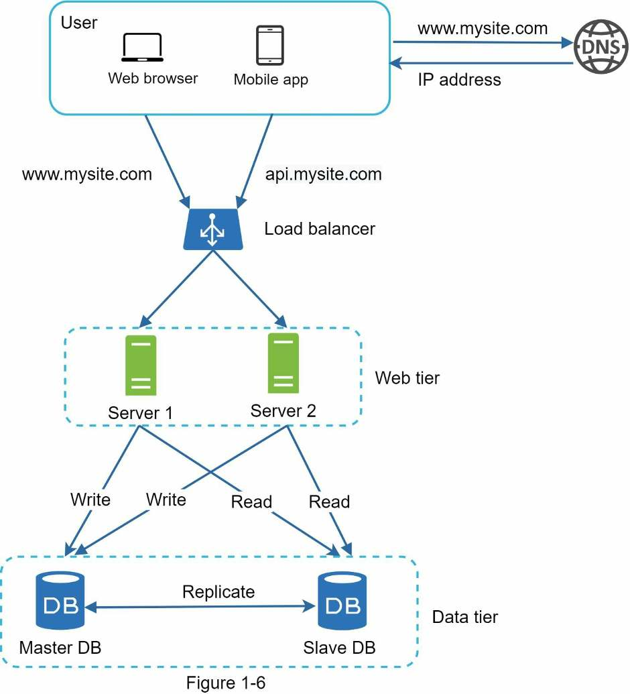
- The user gets the load balancer's IP from DNS and connects to it.
- The HTTP request is routed to Server 1 or Server 2.
- The web server reads user data from a slave.
- It sends any data-modifying operation (write, update, delete) to the master.
Next bottleneck → load and response time: add a cache and move static content to a CDN.
Cache
A cache keeps expensive responses or frequently accessed data in memory, so repeat requests skip the database.
Problem: in Figure 1-6 every page load makes one or more database calls, which hurts performance.
Cache tier
A cache tier is a temporary data store, much faster than the database. A separate tier gives better performance, a lighter database workload, and independent scaling of the cache.
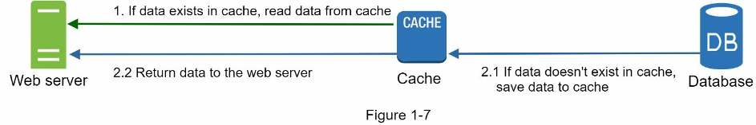
- The web server checks whether the cache has the response.
- Hit: send the cached data to the client.
- Miss: query the database, store the response in the cache, send it to the client.
The book calls this a read-through cache. Other strategies suit other data types, sizes and access patterns. Most cache servers offer APIs for common languages; typical Memcached calls (TTL 3,600 s = 1 hour):
SECONDS = 1
cache.set('myKey', 'hi there', 3600 * SECONDS)
cache.get('myKey')Considerations for using a cache
| Consideration | What to know |
|---|---|
| When to use | Data read frequently but modified infrequently. Cache memory is volatile: a restarted cache server loses everything, so keep important data in persistent stores. |
| Expiration policy | Have one, so expired data is removed; otherwise it stays in memory permanently. Too short → reloads from the DB too often. Too long → stale data. |
| Consistency | Keep the data store and cache in sync. They drift because writes to the store and the cache are not in a single transaction. Across multiple regions this is hard (see "Scaling Memcache at Facebook"). |
| Mitigating failures | One cache server is a single point of failure (SPOF): "a part of a system that, if it fails, will stop the entire system from working." Use multiple cache servers across data centers, and overprovision memory by some percentage as a buffer as usage grows. |
| Eviction policy | When the cache is full, adding items can remove existing ones (cache eviction). Least recently used (LRU) is most popular; least frequently used (LFU) or first in, first out (FIFO) suit other cases. |
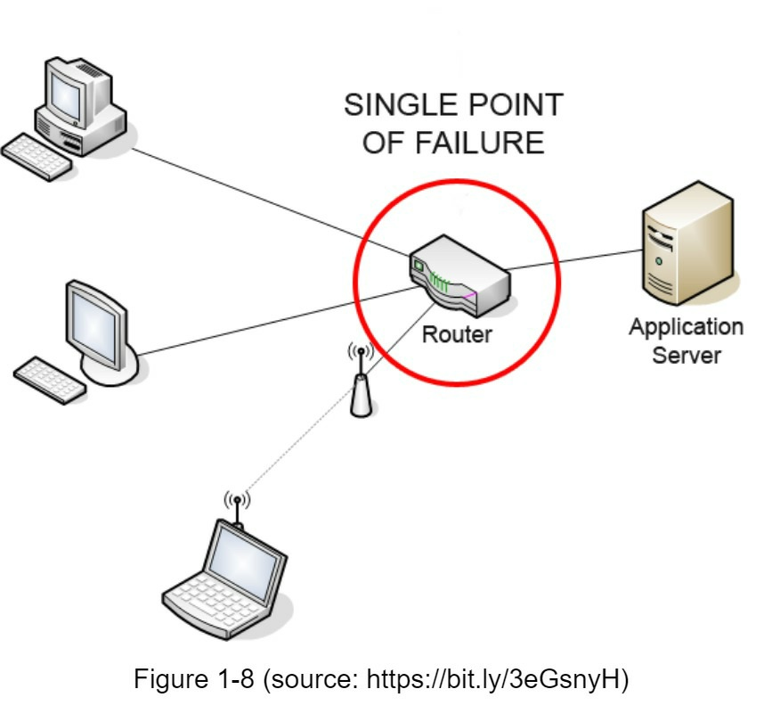
Content delivery network (CDN)
A CDN is a network of geographically dispersed servers that caches static content (images, videos, CSS, JavaScript files, etc.) close to users.
Dynamic content caching (caching HTML pages by request path, query strings, cookies and request headers) is newer and out of the book's scope; this chapter covers static content.
The CDN server closest to the user delivers the static content, so the farther users are from CDN servers, the slower the site loads. With CDN servers in San Francisco, users in Los Angeles get content faster than users in Europe.
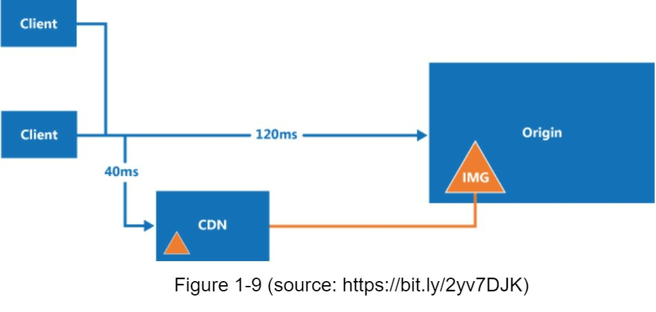
CDN workflow
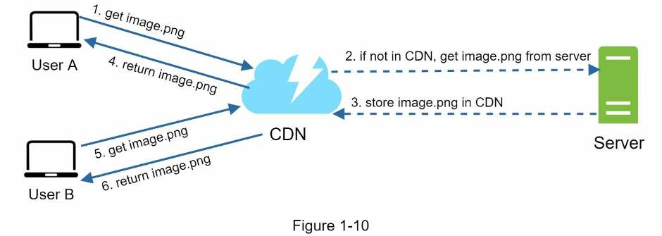
- User A requests
image.pngvia a URL whose domain belongs to the CDN provider, e.g.https://mysite.cloudfront.net/logo.jpg(Amazon) orhttps://mysite.akamai.com/image-manager/img/logo.jpg(Akamai). - On a miss, the CDN requests the file from the origin: a web server or online storage like Amazon S3.
- The origin returns the file, optionally with an HTTP Time-to-Live (TTL) header saying how long to cache it.
- The CDN caches the image and returns it to User A. It stays cached until the TTL expires.
- User B requests the same image.
- The CDN serves it from cache as long as the TTL hasn't expired.
Considerations for using a CDN
| Consideration | What to know |
|---|---|
| Cost | Third-party providers charge for data transfer in and out. Caching rarely used assets brings no real benefit, so move them out. |
| Cache expiry | Matters for time-sensitive content. Too long → stale content. Too short → repeated reloading from the origin. |
| CDN fallback | During a temporary CDN outage, clients should detect the problem and request resources from the origin. |
| Invalidating files | To remove a file before it expires: (1) invalidate it with the CDN vendor's API, or (2) use object versioning, adding a version parameter to the URL, e.g. image.png?v=2. |
The design with CDN and cache
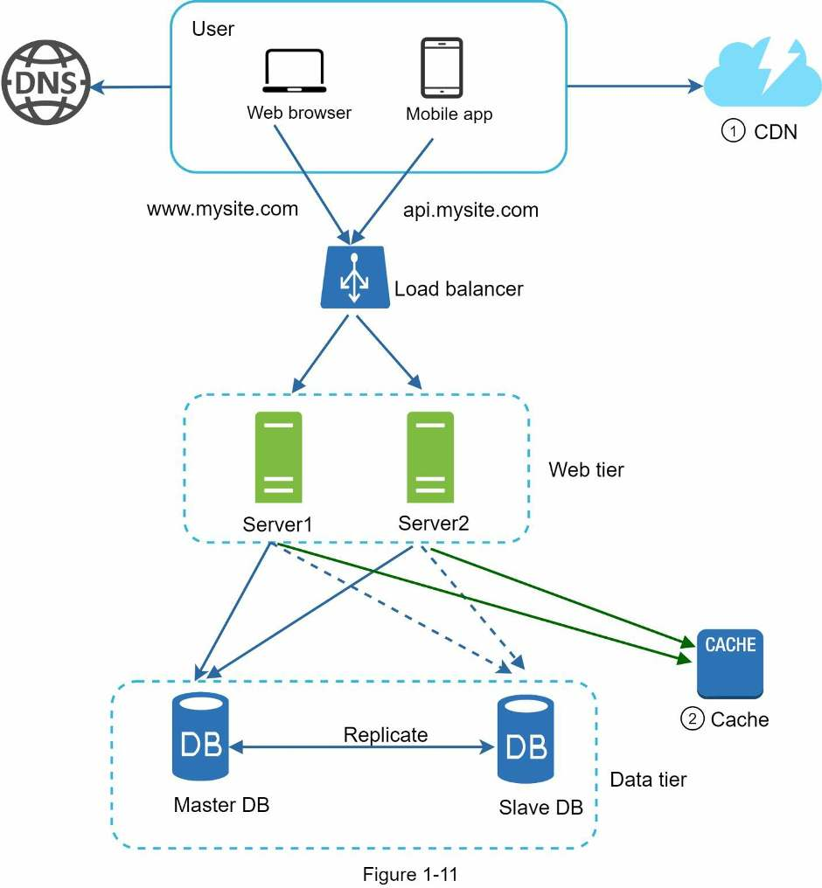
- Static assets (JS, CSS, images, etc.) come from the CDN instead of the web servers, for better performance.
- Caching data lightens the database load.
Next bottleneck → session state on web servers blocks horizontal scaling.
Stateless web tier
Move state (e.g. user session data) out of the web servers into a shared store, so any server can handle any request.
A stateful server remembers client data (state) from one request to the next; a stateless server keeps none. Store session data in persistent storage (relational DB or NoSQL) that every web server can read, and you have a stateless web tier.
Stateful architecture
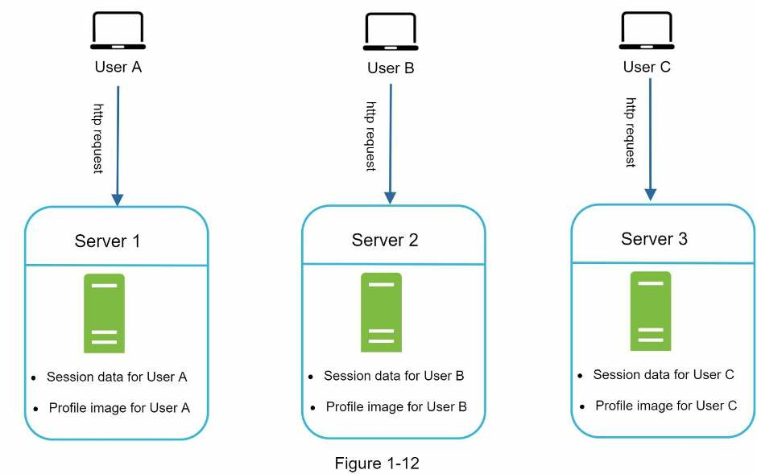
User A's session lives on Server 1, so every request from User A must go there to authenticate; on Server 2 authentication would fail. Likewise User B → Server 2, User C → Server 3. Most load balancers can do this with sticky sessions, but they add overhead, make adding or removing servers much harder, and make server failures hard to handle.
Stateless architecture
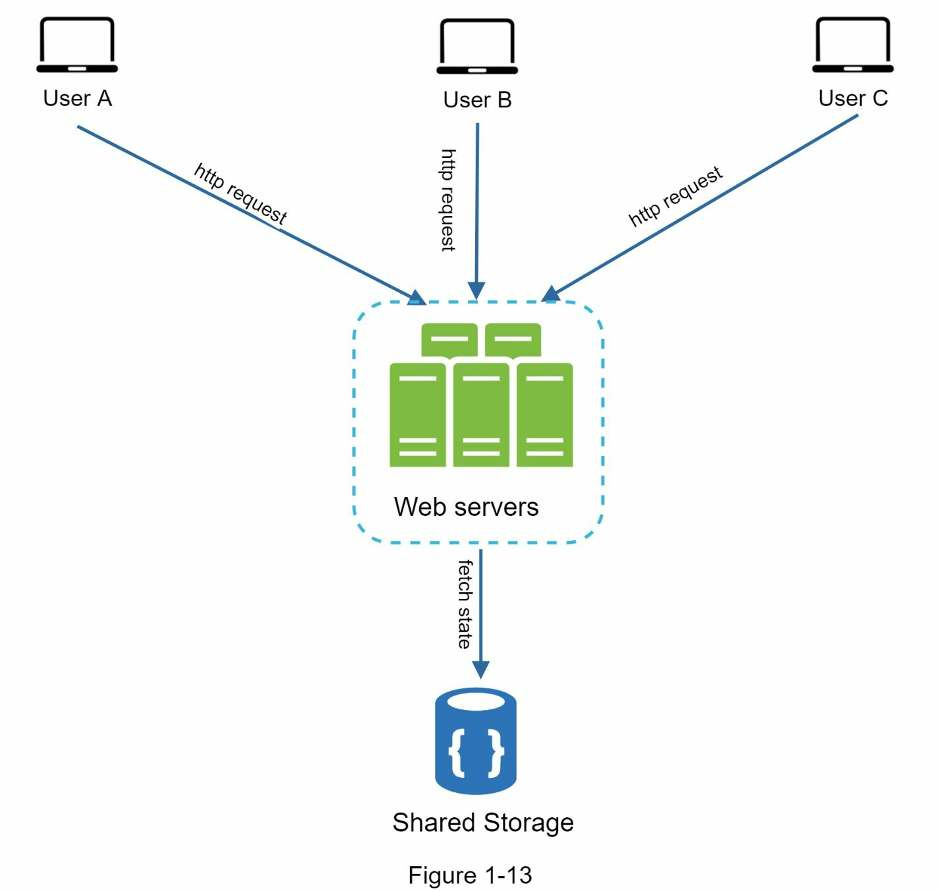
Any web server can take any request and fetch state from a shared data store. A stateless system is simpler, more robust and more scalable:
| Stateful | Stateless | |
|---|---|---|
| Session data lives | On one web server | In a shared data store |
| Routing | Same client → same server (sticky sessions) | Any server |
| Adding/removing servers | ✗ Much harder | ✓ Easy; can autoscale |
| Server failures | ✗ Challenging | ✓ More robust |
The design with a stateless web tier
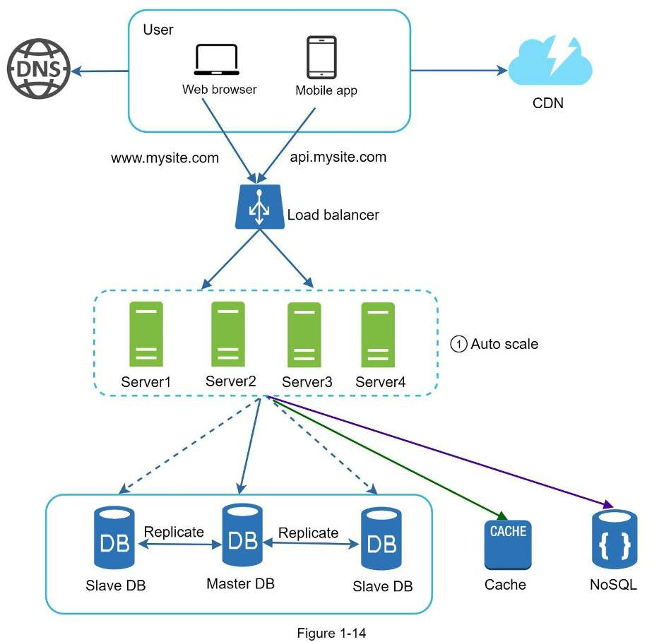
- The session store could be a relational DB, Memcached/Redis, NoSQL, etc. The design picks NoSQL because it's easy to scale.
- Autoscaling means adding or removing web servers automatically based on traffic load. It becomes easy once state is out of the web servers.
Next bottleneck → many international users need availability and speed across regions.
Data centers
Run in several data centers, route each user to the closest one, and move all traffic to a healthy one during an outage.
Normally users are geoDNS-routed (geo-routed) to the closest data center, splitting traffic x% to US-East and (100 − x)% to US-West. geoDNS is a DNS service that resolves a domain name to an IP address based on the user's location.
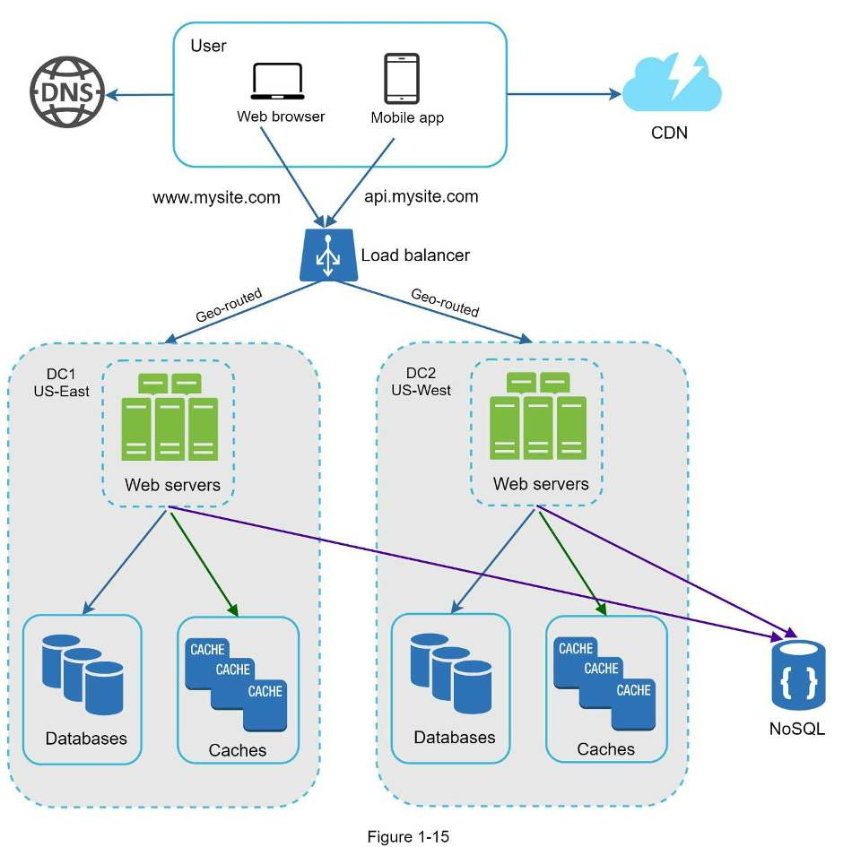
During a significant data center outage, send all traffic to a healthy data center:
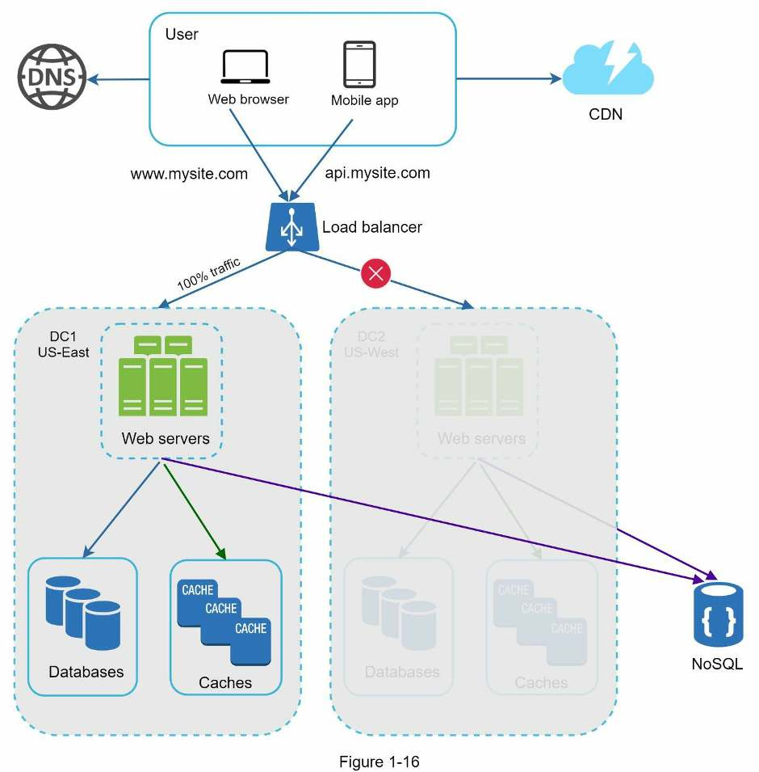
Challenges of a multi-data-center setup
| Challenge | What to do |
|---|---|
| Traffic redirection | Effective tools must send traffic to the correct data center. GeoDNS can send each user to the nearest one. |
| Data synchronization | Users in different regions may use different local databases or caches, so after a failover traffic may reach a DC where their data is unavailable. Common fix: replicate data across data centers (Netflix uses asynchronous multi-data-center replication). |
| Test and deployment | Test the site/app from different locations. Automated deployment tools keep services consistent across all data centers. |
Next bottleneck → components must be decoupled to scale independently.
Message queue
A message queue lets services communicate asynchronously through a buffer, so senders and receivers can fail and scale independently.
The book defines it as a durable component, stored in memory, that supports asynchronous communication and acts as a buffer that distributes asynchronous requests. (In practice, durable queues also persist messages to disk so they survive a restart.)
- Producers (publishers): input services that create messages and publish them to the queue.
- Consumers (subscribers): services or servers that connect to the queue and perform the actions the messages define.
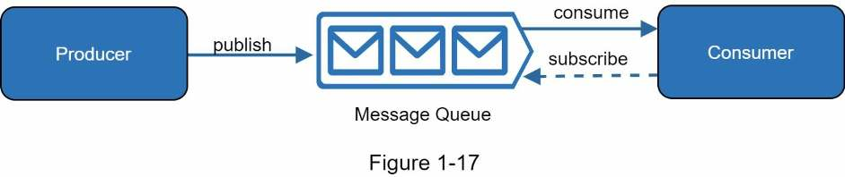
Decoupling makes queues a preferred architecture for scalable, reliable apps: the producer can post while the consumer is unavailable, and the consumer can read while the producer is unavailable.
Example: photo processing
Your app offers photo customization (cropping, sharpening, blurring), and these tasks take time.
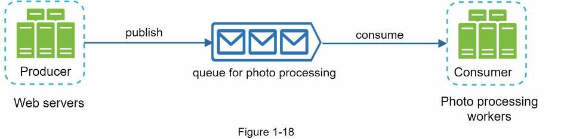
- Web servers publish photo processing jobs to the queue.
- Photo processing workers pick up jobs and do the customization asynchronously.
- Each side scales independently: when the queue grows large, add workers to cut processing time; when it's mostly empty, remove workers.
Logging, metrics, automation
Good practice on a small site with a few servers; essential once the site serves a large business.
| Tool | What it gives you |
|---|---|
| Logging | Error logs help you find errors and problems. Monitor them per server, or aggregate them into a centralized service for easy search and viewing. |
| Metrics | Business insights and system health:
|
| Automation | Big, complex systems need automation tools for productivity. With continuous integration, every code check-in is verified automatically, so problems surface early. Automating build, test and deploy greatly improves developer productivity. |
The design with a message queue and tools
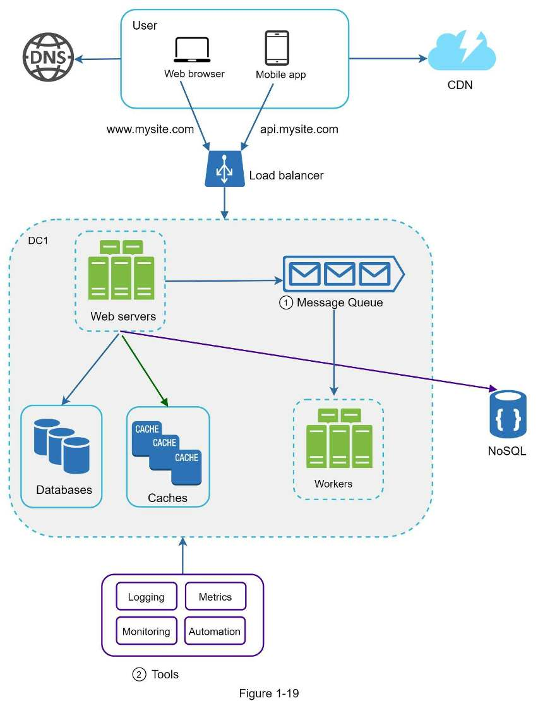
- The message queue makes the system more loosely coupled and failure resilient.
- Logging, monitoring, metrics and automation tools are added.
Next bottleneck → growing data overloads the database.
Database scaling
Either buy a bigger database server (vertical) or split the data across many servers (horizontal, i.e. sharding).
Vertical scaling
Scaling up adds power (CPU, RAM, disk, etc.) to an existing machine. Some database servers are very powerful:
But vertical scaling has serious drawbacks:
- Hardware limits: with a large user base, one server isn't enough.
- Greater risk of a single point of failure.
- High cost: powerful servers are much more expensive.
Horizontal scaling (sharding)
Sharding adds more servers. It splits a large database into smaller, more easily managed parts called shards. All shards share the same schema, but each shard's data is unique to it.
In the example, users are assigned to a database server by user ID. Every access runs a hash function to find the shard, here user_id % 4: result 0 → shard 0, result 1 → shard 1, and so on.
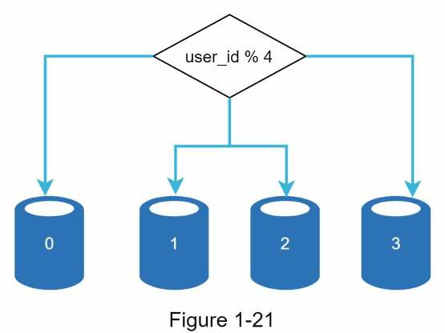
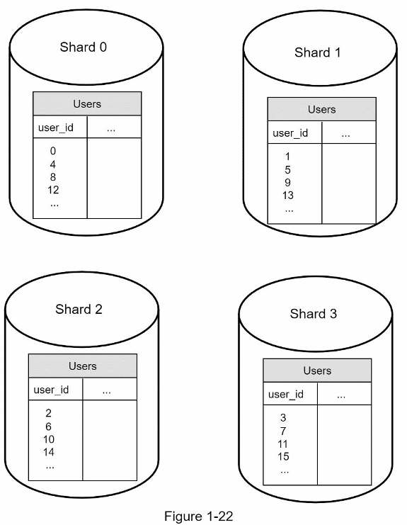
Choosing the sharding key
The sharding key (or partition key) is the most important choice in a sharding strategy: one or more columns that decide how data is distributed (here user_id). It routes each query to the correct database, so reads and writes stay efficient. Above all, pick a key that distributes data evenly.
New problems sharding creates
Sharding is far from perfect. It adds complexity and new challenges:
| Problem | Cause | Fix |
|---|---|---|
| Resharding data | Needed when (1) one shard can't hold more data because of rapid growth, or (2) some shards hit shard exhaustion sooner because data is unevenly distributed. You must update the sharding function and move data around. | Consistent hashing (Chapter 5) |
| Celebrity problem (hotspot key) | Excessive access to one shard overloads its server. If Katy Perry, Justin Bieber and Lady Gaga all land on one shard, a social app floods it with reads. | Give each celebrity its own shard, which may need further partitioning |
| Join and de-normalization | Joins across shards are hard. | De-normalize so queries run against a single table |
Route a user_id with user_id % N, then add one shard and see how much data has to move.
The design with sharding
- Databases are sharded to keep up with rapidly growing data traffic.
- Some non-relational functionality moves to a NoSQL data store to reduce database load.
Millions of users and beyond
Scaling is iterative. Repeating these techniques gets you far; past millions of users you'll need more fine-tuning and new strategies, such as optimizing the system and decoupling it into even smaller services.
The book's summary of how to support millions of users:
- Keep the web tier stateless
- Build redundancy at every tier
- Cache data as much as you can
- Support multiple data centers
- Host static assets in a CDN
- Scale your data tier by sharding
- Split tiers into individual services
- Monitor your system and use automation tools
Self-test
Walk through the request flow of a single-server setup.
(1) The user's domain (e.g. api.mysite.com) goes to DNS, usually a paid third-party service. (2) DNS returns an IP address. (3) The client sends HTTP requests to that IP. (4) The web server returns HTML or JSON.
Why separate the web tier from the data tier?
So each can be scaled independently. One server running both stops being enough as users grow.
When would you pick NoSQL over a relational database?
- You need super-low latency
- Data is unstructured or not relational
- You only serialize/deserialize data (JSON, XML, YAML)
- You must store a massive amount of data
Otherwise, default to relational.
What are the limits of vertical scaling?
A hard hardware limit (you can't add unlimited CPU/RAM), no failover or redundancy (one server down = site down, a single point of failure), and high cost for powerful servers.
Why do web servers behind a load balancer use private IPs?
For security. Clients only reach the load balancer's public IP. Private IPs are reachable only between servers in the same network, not over the internet.
In master–slave replication, what happens when the master goes down, and why is it tricky?
A slave is promoted to master and temporarily handles all operations, and a new slave is added. It's tricky because the promoted slave's data may be out of date, so missing data must be recovered with data recovery scripts.
What happens if a slave database goes offline?
If it was the only slave, reads go to the master temporarily until a new slave replaces it. If there are other slaves, reads go to the healthy ones and a new server replaces the failed one.
Describe the book's cache read flow. What is the book's name for it?
Check the cache. On a hit, return the data. On a miss, query the database, store the result in the cache, and return it. The book calls it a read-through cache (often called cache-aside when the app does the loading).
Name the five cache considerations.
When to use it (read-heavy, rarely modified, not for persistence), expiration policy (not too short or too long), consistency (store and cache aren't in one transaction), mitigating failures (multiple cache servers across DCs, overprovision memory), and eviction policy (LRU; also LFU, FIFO).
How can you remove a file from a CDN before its TTL expires?
Invalidate it with the CDN vendor's API, or use object versioning: change the URL, e.g. image.png?v=2.
Why are sticky sessions a weak way to scale, and what replaces them?
They add overhead, make adding/removing servers much harder, and make server failures hard to handle. Instead, make the web tier stateless: keep session data in a shared store (NoSQL in the book), so any server can serve any request and the tier can autoscale.
What are the three challenges of a multi-data-center setup?
Traffic redirection (geoDNS to the nearest DC), data synchronization (replicate across DCs, e.g. Netflix's async replication), and test and deployment (test from several locations; automated deployment keeps DCs consistent).
How does a message queue help with slow photo-processing tasks?
Web servers publish jobs to the queue and workers process them asynchronously. Each side can be unavailable without blocking the other, and workers scale with queue size: add workers when it grows, remove them when it's mostly empty.
What makes a good sharding key?
One or more columns that route each query to the right shard and, above all, spread data evenly, such as user_id with user_id % 4.
Name three problems sharding introduces and how to handle each.
Resharding (shard full or exhausted early) → consistent hashing. Celebrity/hotspot key → a dedicated shard per celebrity, possibly split further. Cross-shard joins → de-normalize so queries hit a single table.
Terms to know
- DNS
- Domain Name System: turns a domain name into an IP address. Usually a paid third-party service.
- Load balancer
- Spreads incoming traffic evenly across a load-balanced set of servers; clients reach only its public IP.
- Failover
- Moving work to a healthy component when one fails, e.g. promoting a slave DB or routing all traffic to another data center.
- Master / slave
- Replication roles: the master takes writes, slaves hold copies and serve reads.
- SPOF
- Single point of failure: a part whose failure stops the entire system.
- Read-through cache
- The book's name for: check the cache, and on a miss load from the DB and fill the cache.
- TTL
- Time-to-Live: how long a cached item (e.g. a CDN object) stays valid.
- LRU
- Least recently used: the most popular cache eviction policy.
- CDN
- Content delivery network: geographically dispersed servers that cache static content near users.
- Sticky sessions
- Load-balancer feature that sends every request from a client to the same server.
- geoDNS
- DNS that resolves a domain to different IPs based on the user's location.
- Sharding key
- Also called partition key: the column(s) that decide which shard holds a row.
Book references (go deeper)
- Hypertext Transfer Protocol
- Should you go Beyond Relational Databases?
- Replication
- Multi-master replication
- NDB Cluster Replication: Multi-Master and Circular Replication
- Caching Strategies and How to Choose the Right One
- R. Nishtala et al., "Scaling Memcache at Facebook," NSDI '13
- Single point of failure
- Amazon CloudFront Dynamic Content Delivery
- Configure Sticky Sessions for Your Classic Load Balancer
- Active-Active for Multi-Regional Resiliency
- Amazon EC2 High Memory Instances
- What it takes to run Stack Overflow
- What The Heck Are You Actually Using NoSQL For